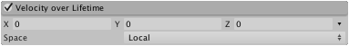

Velocity over Lifetime module
The Velocity over Lifetime module allows you to control the velocity of particles over their lifetime.

Properties
| Property | Function |
|---|---|
| Linear X, Y, Z | Linear velocity of particles in the X, Y and Z axes. |
| Space | Specifies whether the Linear X, Y, Z axes refer to local or world space. |
| Orbital X, Y, Z | Orbital velocity of particles around the X, Y and Z axes. |
| Offset X, Y, Z | The position of the center of orbit, for orbiting particles. |
| Radial | Radial velocity of particles away from/towards the center position. |
| Speed Modifier | Applies a multiplier to the speed of particles, along/around their current direction of travel. |
Details
To create particles that drift in a particular direction, use the Linear X, Y and Z curves.
To create effects with particles that spin around a center position, use the Orbital velocity values. Additionally, you can propel particles towards or away from a center position using the Radial velocity values. You can define a custom center of rotation for each particle by using the Offset value.
You can also use this module to adjust the speed of the particles in the Particle System without affecting their direction, by leaving all the above values at zero and only modifying the Speed Modifier value.